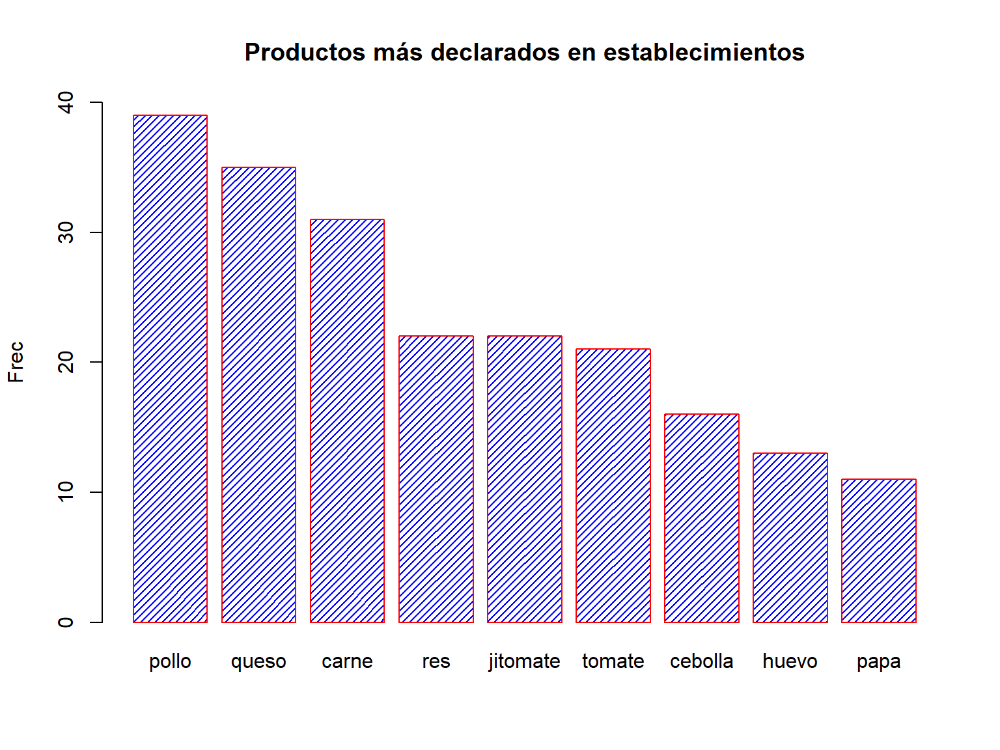
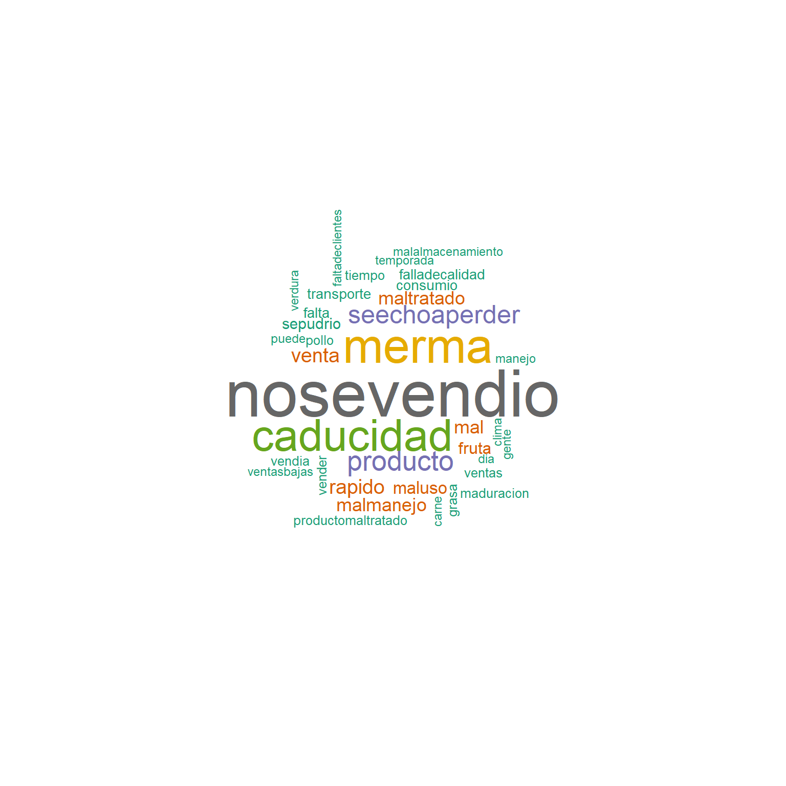

Resultados Establecimientos
Consideración inicial acerca de las cifras que se obtienen de la muestra.
Antes de dar paso al análisis de los datos captados en el operativo de prueba, se debe tener presente que la muestra no fue construida en forma probabilística, de tal forma que no pueden obtenerse inferencias y ni siquiera pueden usarse las cifras obtenidas como indicadores de estimaciones o aproximaciones a los datos para propósitos de publicación de los mismos. Todas las cifras que a continuación se presentan, son indicadores construidos con fines de análisis para este proyecto.
Con estos datos se construyen los siguientes indicadores y gráficos.
Resumen de entrevistas captadas.
En el caso de los establecimientos o unidades económicas relacionadas con el sector alimentario, se lograron 180 establecimientos con entrevistas completas, de los que se tiene un total de 515 productos declarados, con un total de 345 productos en los que se declaró alguna pérdida.
Establecimientos
Tamaño de los establecimientos
La distribución de los establecimientos entrevistados por tamaño fue la siguiente:
Con mayoría de establecimientos pequeños.
Tipo de Consumo, Mercado y Origen de los productos
En 153 de los 180 establecimientos entrevistados se declaró que sus productos son para consumo humano, 2 declararon que son para consumo animal, y 25 para ambos tipos de consumo.
En lo que corresponde al mercado al que se orientan sus ventas o servicios, 169 declararon como destino exclusivo el mercado nacional minorista, 8 exclusivamente al mercado nacional mayorista, 2 con ventas o servicios a ambos tipos de mercado nacional, y 1 establecimiento que al mercado nacional, suma también el extranjero.
En el caso del origen de los alimentos que se comercializan, la mayoría de los establecimientos vende o presta servicios de alimentos de origen nacional.
Registros de pérdidas o desperdicios
En cuanto a la pregunta relacionada con la costumbre de llevar registros de las pérdidas o desperdicios del establecimiento, las respuestas tuvieron las siguientes frecuencias:
Respecto a la forma de registro, 4 de ellos declararon llevar registro en Excel, mientras 27 de ellos declaran llevar una bitácora, libro o cuaderno de registro, y 5 más mediante reportes, notas o inventarios.
Bancos de alimentos y redes alimentarias alternativas
Los resultados del sondeo en estas preguntas fueron los siguientes:
Temas relacionados con la PDA en México
Se le preguntó al informante, si ha escuchado o tiene conocimiento sobre campañas para reducir la pérdida o desperdicio de alimentos; sobre la NOM-251-SSA1-2009, que establece requisitos mínimos de buenas prácticas de higiene a observarse en el proceso de alimentos, bebidas, suplementos alimenticios y sus materias primas a fin de evitar su contaminación a lo largo de su proceso; y acerca del distintivo H, que es un reconocimiento que otorgan la Secretaría de Turismo y la Secretaría de Salud, a los establecimientos fijos de alimentos y bebidas por cumplir con los estándares de higiene que marca la Norma Mexicana NMXF605 NORMEX 2015.
Los resultados de estas preguntas se resumen en el siguiente cuadro.
| Tema | Establecimientos donde conocen del tema | Establecimientos donde no conocen del tema |
|---|---|---|
| Campañas para reducir la pérdida o desperdicio de alimentos | 43 (24%) | 137 (76%) |
| NOM-251-SSA1-2009 | 69 (38%) | 111 (62%) |
| Distintivo H | 62 (34%) | 118 (66%) |
Tipo de productos declarados
Dado que los productos se captaron en una variable abierta, conviene hacer un análisis de textos para conocer el comportamiento y frecuencia de las respuestas.
Los productos con mayor frecuencia declarada se detallan en la siguiente gráfica.

Pérdidas o desperdicios
Cantidad de los productos vendidos
Para poder visualizar las cantidades vendidas fue necesario agrupar los productos declarados por tipo.
De este modo, es posible esbozar la siguiente gráfica de los tipos de alimentos más frecuentes declarados en los establecimientos.
Cantidades perdidas
Del mismo modo, se puede dibujar la gráfica de cantidades perdidas por mes, para el mismo conjunto genérico de productos.
Aunque existen muchas consideraciones para construir adecuadamente una estimación de porcentaje de pérdidas, se puede esbozar una gráfica del cociente de la cantidad perdida respecto a la cantidad vendida o manejada por el establecimiento durante un mes, por tipo de producto:
Respecto al monto estimado de dinero perdido (estimación hecha por el propio informante), se presenta el mismo tipo de desglose para los productos más frecuentes.
O bien, pueden estimarse las pérdidas económicas por kg de producto (se excluyen algunas categorías por discrepancias en las unidades declaradas, por ejemplo, litros, piezas, etc.):
El monto total de los 340 productos sobre los que se estimaron pérdidas económicas asciende a $1,025,505.
Pérdidas comestibles
Por otra parte, se tiene la cantidad de producto perdido que aún era comestible. Su distribución es la siguiente:
Se puede tener también un dato relativo de lo comestible respecto a la cantidad perdida:
Causas y destino de las pérdidas
Las causas se captaron de forma abierta, de modo que aplicamos la herramienta de análisis de textos para visualizar el panorama de las respuestas obtenidas.

Y respecto al destino de las pérdidas, se cuenta con una precodificación que permite obtener un gráfico de las respuestas.
Medidas para disminuir la pérdida o desperdicio
Finalmente, se obtuvo que 117 (65%) establecimientos declaran haber tomado medidas para disminuir la pérdida o desperdicio de sus productos, y el resto, afirmó no haberlo hecho.
Se incluyó una pregunta abierta para que el informante describiera libremente las medidas que ha tomado. El análisis de nube de palabras arroja lo siguiente.